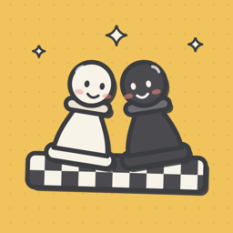
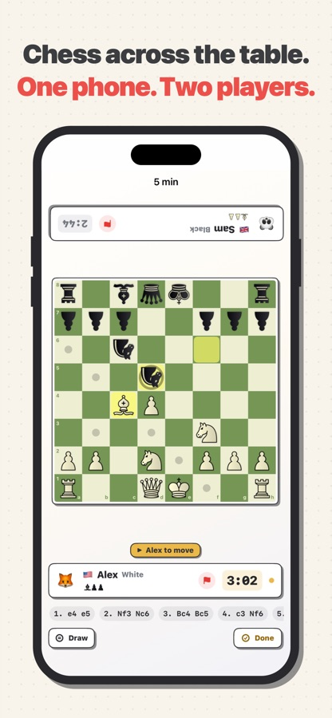
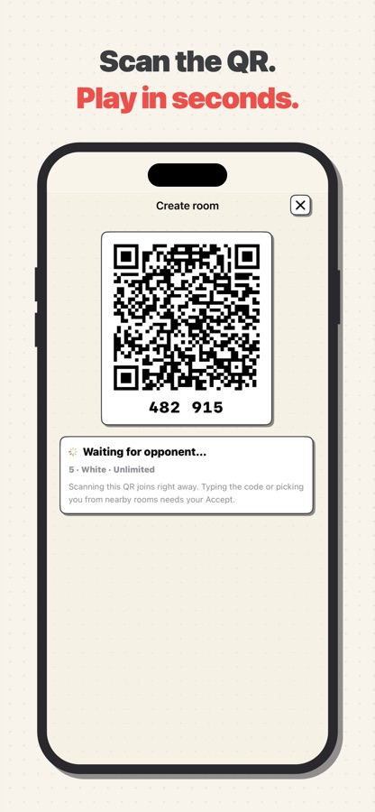
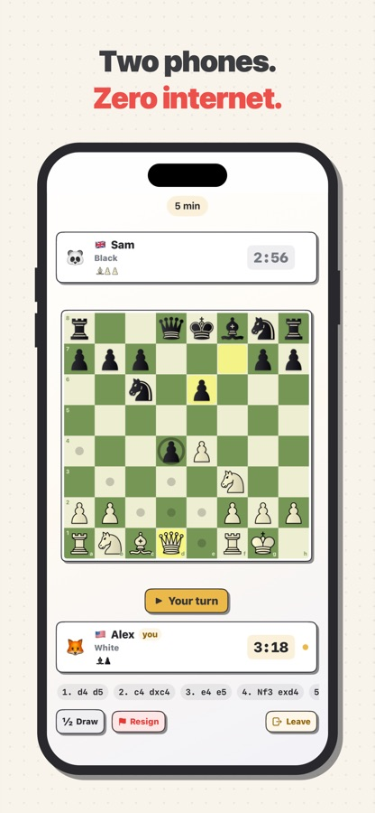
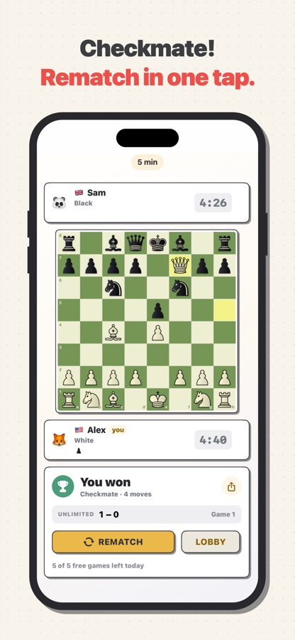
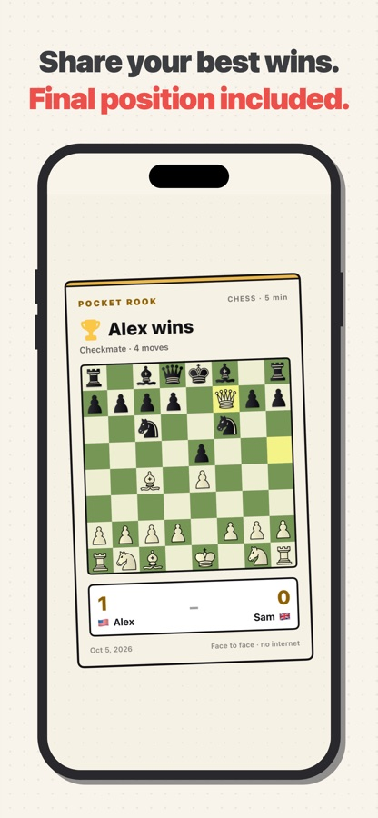
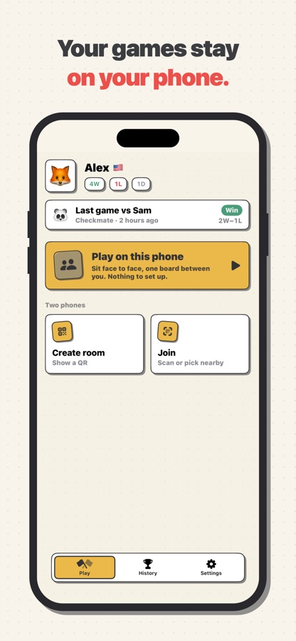

1
One phone, two players
Put the phone between you. The far side of the board turns to face your opponent. Free and unlimited.

Pocket RookPlay chess with the person across from you — one phone between you, or two phones that connect directly and securely. No account, no game server, no Wi‑Fi network needed.






Put the phone between you. The far side of the board turns to face your opponent. Free and unlimited.
Create a room and show the QR. The other phone scans it and the game starts — or types the six-digit code.
Clocks stay in sync on both phones. Rematch in one tap, and share a card with the final position.
Pick a clock and tap Create room. Your phone shows a QR code and a six-digit code, and appears in the nearby list of phones close by.
Scan the QR and the game starts straight away. Typed the code or picked your room from the nearby list? You tap Accept first, so nobody can guess their way in.
The host phone is the referee for clocks, draws and resignations. If a phone drops out, both wait 45 seconds for it to reconnect and the game carries on.
Phones talk to each other directly over peer-to-peer Wi‑Fi. Works in a café, a classroom or on a plane.
Every two-phone game is encrypted end to end. No account, no tracking, and your history stays on your phone.
If the app closes or a phone drops out, the game is saved and reconnects. A move played is played — no takebacks.
Castling, en passant, promotion, check, checkmate and stalemate, plus draws by threefold repetition, the fifty-move rule and insufficient material.
Seven time controls from 1-minute bullet to 15+10 rapid, with increments. Pro adds custom clocks and handicap clocks that give the stronger player less time.
Offer a draw, resign or play to the flag. Rematch in one tap with colours swapped, and the series score keeps counting.
Every finished two-phone game is saved on your phone with the result and the full move list to replay, plus your head-to-head record against each opponent.
Export your history as a file, keep it in Files or send it with AirDrop, and import it on a new phone. Free for everyone, never uploaded by the app.
Three boards and two piece sets for free. Pro adds the Marble, Midnight, Coral and Royal purple boards and the Fantasy, Spatial, Celtic and Firi piece sets.
After the game, share a card with the final position and the score, ready for a group chat.
On iPad the game switches to a side-by-side layout in landscape. With VoiceOver, every square reads out its piece and whether it is a legal move.
English, Vietnamese, German, French, Spanish, Portuguese, Russian, Indonesian, Japanese, Korean, Thai, Arabic and Hindi. Switch in Settings without leaving the app.
$3.99 / month
Auto-renewing subscription. Cancel anytime.
$19.99 / year
Auto-renewing subscription. Starts with a 7-day free trial for eligible new subscribers.
$39.99 once
One-time purchase. Pro stays unlocked for good.
One player with Pro is enough: the game is free for both and counts for neither. Subscriptions renew automatically unless cancelled at least 24 hours before the end of the current period. Prices in USD from the App Store; local currency and tax may vary by region.
You never need the internet. A game on one phone needs nothing at all. For two phones, keep Wi‑Fi and Bluetooth switched on: the phones connect directly over peer-to-peer Wi‑Fi, so they don't have to join the same network or router, and it works on a plane or in a park. Neither phone has to join a Wi‑Fi network.
One phone taps Create room and shows a QR code and a six-digit code. The other phone taps Join and scans the QR, types the code, or picks the room from the nearby list. A QR scan starts the game straight away; with the code or the nearby list, the host taps Accept first. The first time, iOS asks for Local Network permission, which the two-phone mode needs. Both phones should run the latest version of the app.
Yes. Tap Play on this phone and lay it flat between you. The top player's clock, buttons and dialogs turn to face them across the table, and the clock switches after every move. Games on one phone are free and unlimited, and they are casual: they are not saved to your history.
No. Pocket Rook is for two people at the same table, on one phone or two. There is no computer opponent and no online matchmaking.
Seven presets: 1 min, 3 min, 3 + 2, 5 min, 10 min, 10 + 5 and 15 + 10. With Pro you can build a custom clock from 1 to 90 minutes with up to 60 seconds of increment, or a handicap clock where White and Black start with different time. In a two-phone game, the player who creates the room needs Pro to use a custom clock.
The game is saved after every move. If a phone loses the connection, both phones wait 45 seconds for it to come back, and the clocks pause for the first three drops of a game. If it doesn't return in time, the game is recorded as interrupted with no winner. A game on one phone can be resumed from the home screen at any time.
Free includes unlimited games on one phone, 5 two-phone games a day, history with replay, backup and restore, and no ads. Pro adds unlimited two-phone games, games that are free for whoever you play, custom and handicap clocks, and Pro boards, piece sets and profile icons. If either player in the room has Pro, the game is free for both and does not count toward anyone's daily limit.
Subscriptions are managed in your Apple ID subscription settings and renew unless cancelled at least 24 hours before the end of the current period. If you start the Pro Yearly trial, the app can remind you two days before the trial ends. To get Pro back on a new phone, sign in with the same Apple ID and tap Restore purchases in Settings or on the Pro screen. If Pro ends, your history stays, and the board, pieces and clock go back to the free choices.
Pocket Rook has no account, no server, no analytics and no ads, so nothing about you or your games is sent to the developer. In a two-phone game, moves travel only between the two phones and are encrypted end to end. While you host a room, phones nearby can see your display name, avatar, flag and win/loss totals so they can find you. Your history stays on your device, and a backup is a file that you export and keep yourself.
iPhone and iPad with iOS 17 or later. The app is in English, Vietnamese, German, French, Spanish, Portuguese, Russian, Indonesian, Japanese, Korean, Thai, Arabic and Hindi, and you can change the language in Settings.